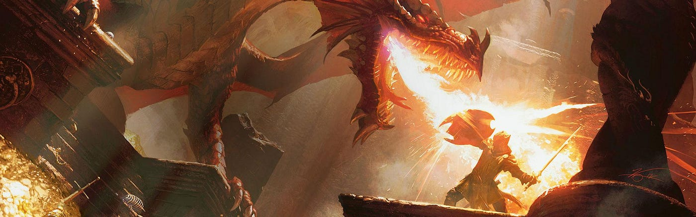

The Story

The Past
A secret orginization called The Order of the Broken Crown where people come together to forward thier believes on how advance the world for the better by destruction, turf take over, and assassinations. A small 3 man group a part of the orginization named The Crescent Rose with Meave, Corvin, and Xavier, as thier leader, are responsable for a part of the assassinations that The Order of the Broken Crown is responsable for. For them to be fully apart of the orginization, they were put on one last mission to show thier loyalty. one a the higher ups of the orginization sent the 3 to assassinate a princess of a kingdom where she would only be escorted by only 2 gaurds, another easy mission for the 3. Upon completing this mission, The Crescent Rose would fully become a part of the orginization.
With the mission being underway, the 3 were able to takeout the 2 gaurds escorting the princess with ease. When the 3 entered the carrage escorting her they were hesitant to see a little girl only to be about 11 years old. She looked at the 3 and say "Are you hear to see mommy too?" This broke the 3 and relized what this mission was trully meant to show. Follow orders and ask no questions. They felt betrayed and with reinforcments they wanted to flee but Xavier wanted to stay and protect the child even though the gaurds were for her. As Meave and Corvin surrendered Xavier dueled the captain of the guard, Prince Caelum, resulting in his left arm being cut off and leaving Xavier tired and defeated untimitly leading to The Crescent Rose being Captured.
With The Crescent Rose> captured, they were brought to the king of the kingdom. The king asked for thier story of what exactly was thier mission. Xavier, while kneeling before the king holding his arm that was cut off and wrapped in bandages from the gaurds, told them about thier orginization, what their purpose was, and why they were sent to assassinate the king's daughter. He also added that they would not have gone about the mission if they knew that it was a little girl. Corvin stepped in saying that when he did his recon before the mission, he knew about the princess's age leading Xavier to lash out at Corvin in front of the king. Meave cut between the two and after splitting them up she looked at the king and added herself that they can not return the orginization as they have failed and disapprove of them now due to the mission's failure. Meave also added that if they were to return would walk into thier own execution. With the king hearing the colfict between the gaurding of the princess and the hesitation of knowing her age, he was still in a perdicament and asked "Why should I not execute you myself? You did almost kill my daughter after all.". Meave answered "We came here to kill her yes. But we choose to Stop." The King heard these word and poundered, hearing that they admit what they did but made an ultimate choice in the end. after thinking for a little while, he agreed to keep them alive but under the condition that they work for him under the watch of his gaurds to show thier loyalty. He then decised to strip away thier old title of "The Crescent Rose" and renamed them as "The King's Shadow".
With this new era for the 3, they were givin task with the watchful eye of the already loyal gaurds of the Kingdom. Corvin was to be placed in room where he is to use his crows to survey the land to find any trouble makers and send the gaurds out to help the civillians. Meave was tasked with medicine making, with the King gifting her a garden that the queen used to use before passing away. Xavier was given the task of roaming the town, alongside Prince Caelum. Xavier's task however was on hault because of his missing arm. With the king's permission, and over the course of almost a month, Xavier rested while Meave was allowed to help give Xavier something to give him his arm back (somewhat). With her druid abilities she would be able to forge something a part of nature to Xavier.
Meave's task of getting Xavier a new arm was a tough one as she had never trully done it herself and learning the pracice of conduring an object from nature to bond with the human body would be a great feat, but she was determined. She though about using leaves, but that was too fragile. Then she though about stone, but that was too dull. Then the young Princess Lily walked in, asking to help Meave. Meave let her and Lily then gave her the idea of using trees. Meave liked the idea and asked if Lily would like to find a branch for her, Lily was so excited to help. Upon asking permission from the King, Meave, Princess Lily, and Prince Caelum, went outside to find some branches.While the 2 followed Lily they were wondering where she was going, after passing so many bracnhes then they relized that they were going down the path to the graveyard. Meave and Prince Caelum heard a voice calling out "I will be by your side" as they looked around they saw no one and when they turned back to Lily, she already had a branch in her hands, handing it to Meave. When they returned Meave got stright to work, growing the branch into a new arm for Xavier. This process took her several weeks but once it was ready and bounded to Xavier, it felt like new arm to him, just a little twiggy.
With Xavier's new arm, he was ready to serve as The King's Shadow. He made his way to the King's court to report his recovery. Along the way Lily tailed Xavier curiously to where he was going becuase of her not being able to see him for so long. As Xavier entered the King's court to report his recovery, Lily finally caught up to Xavier to talk to him and see his new arm that she's heard about. Upon Lily catching up, the arm started to glow and show some sign of life in front of the King and as Xavier placed the wooden arm on Lily's head to pat her, it glowed even more. The king saw this as a sign and decided to change Xavier's role. He placed Xavier to be Lily's trusted bodygaurd as he sensed that the new arm reacted in a way to show protection and care.
The Present
Years have past and the King has become more connected with The King's Shadow as they have helped shaped the kingdom to be more independent to how he wanted it, where the citzens feel more free and alone need to pay the King in just protecting the Kingdom as a whole. A satisfying living style that both parties enjoy. The King has been praised and seen as a citizen by the townspeople any time he leaves the castle. The King's Shadow have also been through changes as well. Corvin has learned new ways to use his crows from not just recon but also as an ability and has even learned through Meave how to turn into one. Meave has reused the Queen's garden not only as a place for growing and producing medicine but also a place of peace, growing flowers and a place to even sleep. Xavier has never left Lily's side as there is rarly a time they are not together. He teaches her about how to get away from tricky situations and even how to use a dagger sometimes (something that the King does no aporrove of all too much). To Xaier's surprise, Lily learns really quickly how to become a little like a rouge in just a few months. Lily is now 18 and sees Xavier as her gaurdin angel and since she has never meet/remember her mother, she see's Meave as a mother figure, as she often visits the graden just to see her. Sometimes, Lily, Meave, and Xavier lay in the garden, looking up into the sky and have long talks about adventures and thier back stories. Most of the time Xavier feels at peace in the garden and finally relaxes and even falls asleep sometimes. While he does sleep Meave and Lily are able to have some girl talk and really connect, even share little secrets with each other.
Peace and Freedom exist in the Kingdom after years of the King's work along with the help of The King's Shadow. With the population of the kingdom growing every year, more gaurds were needed to keep the people safe. Even with this, problems started to come about and word about one of the gaurds being a spy was being spread by everyone in the kingdom. The King's Shadow's instantly knew this was The Order of the Broken Crown's doing.